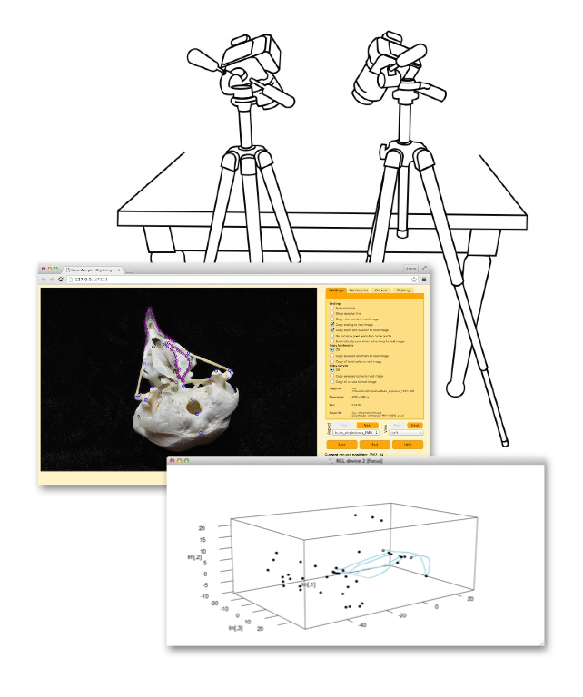

StereoMorph

A two camera, stereo setup
The StereoMorph package includes tools for automatically calibrating a set of two cameras using a checkerboard pattern and a digitizing application for digitizing landmarks and curves. Once the cameras are calibrated, StereoMorph allows users to reconstruct any landmarks and curves digitized in both camera views into 3D. StereoMorph is freely available as an R package. Those interested in using StereoMorph will find several useful resources listed below, including step-by-step tutorials and accompanying project folders with all the files needed for the tutorial.
StereoMorph 3D User Guide v1.6.1
 This user guide has instructions and worked examples to show you how to collect 3D shape data using a stereo photography or videography setup. This includes instructions for installation of StereoMorph, making a checkerboard, measuring a checkerboard's square size, camera calibration, digitizing photographs and video frames, 3D reconstruction, shape reflection and alignment, and video frame extraction.Tutorial: StereoMorph User Guide v1.6.1.pdf (11 MB)
Release date: March 2017
StereoMorph version: >= 1.6.1
StereoMorph 2D Tutorial
 This tutorial will show you how to collect 2D scaled landmarks and curves
from photographs in StereoMorph using different coffee mugs as an example.
This tutorial will show you how to collect 2D scaled landmarks and curves
from photographs in StereoMorph using different coffee mugs as an example.Tutorial: StereoMorph 2D Tutorial.pdf (0.9 MB)
Project folder: Mug project.zip (0.3 MB)
Release date: April 2015
StereoMorph version: >= 1.4
Other StereoMorph Resources
- StereoMorph on CRAN
- StereoMorph Blog : A blog for updates and user questions
- StereoMorph Digitizing App : A digitizing app for landmark and Bézier curve collection
- StereoMorph R manual
- StereoMorph on github